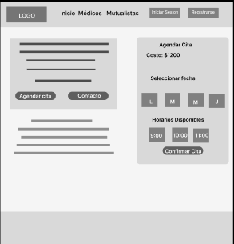
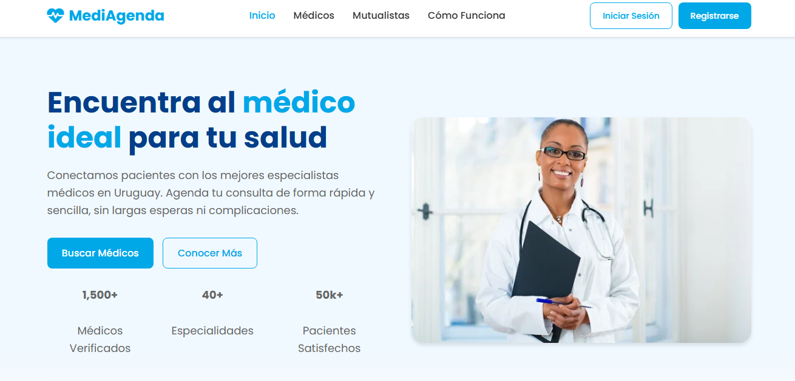
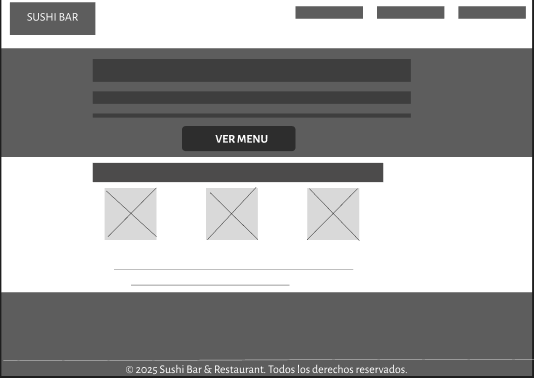
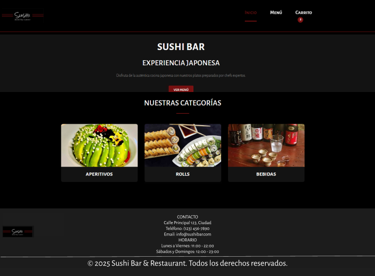
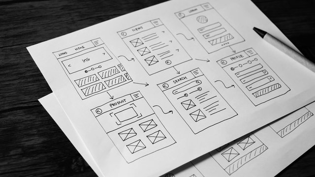
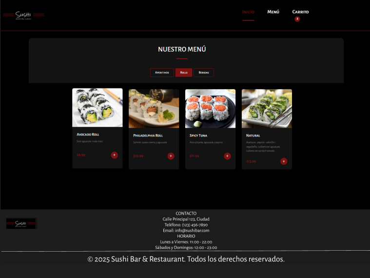
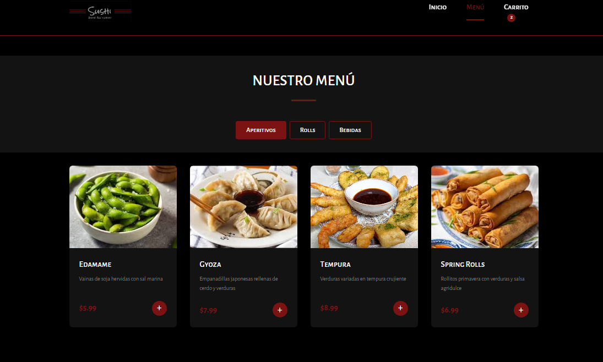

My UX Projects
MediAgenda
Plataforma web para agendar citas médicas de forma intuitiva y sencilla en Uruguay.
Ver Caso de Estudio
Sushi Website
Sushi Website es una plataforma digital Uruguaya diseñada para un restaurante de sushi que busca mejorar su presencia online y facilitar el proceso de pedidos.
Ver Caso de EstudioMediAgenda - Plataforma de Agendamiento Médico
Visión General del Proyecto
MediAgenda es una plataforma web diseñada para ayudar a las personas en Uruguay a encontrar y agendar citas médicas de forma intuitiva y sencilla. El objetivo principal es eliminar las barreras tradicionales en el proceso de agendamiento médico, ofreciendo una experiencia digital fluida y accesible para todos los usuarios.
Estudio de Usabilidad: Hallazgos
Introducción al Estudio
Metodología y objetivos
Realizamos un estudio de usabilidad en dos rondas con un total de 12 participantes (6 en cada ronda) para evaluar la interfaz de reserva de citas médicas. Los participantes, con edades entre 25-65 años, completaron tareas específicas mientras verbalizaban sus pensamientos. El objetivo fue identificar problemas de usabilidad y áreas de mejora en la experiencia de usuario antes del lanzamiento final.
Hallazgos de la Ronda 1
Primera iteración de pruebas
Dificultad para localizar información del médico
El 70% de los usuarios tardaron más de 30 segundos en encontrar las credenciales educativas del médico, sugiriendo problemas de jerarquía visual.
Confusión con el calendario de citas
Los usuarios no entendían inicialmente que debían seleccionar primero una fecha antes de ver las horas disponibles, causando frustración y clics innecesarios.
Falta de confirmación visual
Los usuarios no recibían retroalimentación clara después de seleccionar una hora, generando incertidumbre sobre si la selección se había registrado correctamente.
Hallazgos de la Ronda 2
Segunda iteración después de mejoras
Mejora en la navegación
Después de rediseñar la jerarquía visual, el 90% de los usuarios encontraron la información del médico en menos de 15 segundos, representando una mejora significativa.
Proceso de reserva más intuitivo
La implementación de indicadores visuales para guiar el flujo de selección fecha-hora redujo el tiempo de reserva en un 40%.
Preocupaciones sobre precios
Aunque la información de precios era visible, el 50% de los usuarios expresaron que les gustaría ver opciones de pago o seguros aceptados antes de confirmar la cita.
- Tasa de éxito: Aumentó del 65% en la Ronda 1 al 92% en la Ronda 2
- Tiempo promedio de tarea: Disminuyó de 2:45 minutos a 1:20 minutos
- Satisfacción del usuario (SUS): Mejoró de 68/100 a 84/100
- Tasa de error: Disminuyó de 3.5 errores por usuario a 0.8 errores por usuario
- Implementar un indicador de progreso para mostrar en qué paso del proceso de reserva se encuentra el usuario
- Añadir información sobre métodos de pago y seguros aceptados junto al precio de la consulta
- Mejorar el contraste de color en los botones de acción principal para usuarios con visión reducida
- Incluir un resumen de la cita antes de la confirmación final para verificación
- Implementar las recomendaciones prioritarias antes del lanzamiento
- Realizar pruebas de accesibilidad con usuarios que utilizan tecnologías de asistencia
- Desarrollar un plan para recopilar feedback post-lanzamiento
- Programar una tercera ronda de pruebas después de 3 meses de uso real para evaluar la experiencia a largo plazo
Desafío
El sistema tradicional de agendamiento médico en Uruguay presenta varios problemas: largas esperas telefónicas, horarios limitados para agendar y falta de información centralizada sobre disponibilidad de médicos. MediAgenda busca resolver estos problemas mediante una plataforma digital que centralice toda la información y simplifique el proceso.
Solución
Desarrollamos una plataforma web responsive que permite a los usuarios:
- Buscar médicos por especialidad, ubicación o mutualista
- Ver perfiles detallados de los médicos con su formación y experiencia
- Consultar disponibilidad en tiempo real
- Agendar citas médicas con pocos clics
- Gestionar todas sus citas desde un perfil personal
Proceso de Diseño
El proyecto siguió un proceso de diseño centrado en el usuario:
- Investigación de usuarios y análisis de competencia
- Definición de user personas y journey maps
- Wireframing y arquitectura de información
- Diseño de prototipos en Figma
- Pruebas de usabilidad e iteraciones
- Implementación final con HTML, CSS y JavaScript
Mi Metodología de Diseño
Para el desarrollo de MediAgenda, implementé un enfoque de degradación progresiva, comenzando con el diseño completo para escritorio y adaptándolo posteriormente a dispositivos más pequeños.
Diseño para Escritorio
Desarrollo completo de la experiencia en pantallas grandes
Adaptación para Tablets
Reorganización de elementos manteniendo funcionalidades
Optimización para Móviles
Simplificación de la interfaz priorizando contenido esencial
Beneficios del Enfoque
- Diseño completo desde el inicio
- Mantenimiento de funcionalidades clave
- Adaptación progresiva a cada dispositivo
- Experiencia coherente en todas las plataformas
Diseño Inicial
Adaptación
Optimización
A diferencia del enfoque "mobile-first", la degradación progresiva comienza con la experiencia más completa (escritorio) y luego adapta para dispositivos más pequeños.
¿Por qué elegí este enfoque?
Opté por la degradación progresiva por varias razones estratégicas:
- Visualización completa: El diseño de escritorio permite visualizar todas las funcionalidades y contenidos desde el inicio.
- Priorización de contenido: Al adaptar a dispositivos más pequeños, pude tomar decisiones informadas sobre qué elementos priorizar.
- Coherencia visual: Este enfoque me permitió mantener una identidad visual coherente a través de todos los dispositivos.
- Eficiencia en desarrollo: Resultó más eficiente adaptar desde una versión completa que expandir desde una versión limitada.
Este método fue particularmente adecuado para MediAgenda, donde la visualización de información médica detallada es crucial en pantallas grandes, pero necesita ser accesible y funcional en dispositivos móviles.
Caso de Éxito: Rediseño de la Interfaz de Reserva
Desafío
La interfaz original presentaba una tasa de abandono del 45% durante el proceso de reserva de citas médicas, con usuarios reportando confusión y frustración.
Solución
Implementamos un rediseño basado en los hallazgos del estudio de usabilidad, enfocándonos en:
- Reorganización de la información del médico para mayor visibilidad
- Simplificación del proceso de selección de fecha y hora
- Adición de confirmaciones visuales en cada paso
- Inclusión de información sobre métodos de pago
Resultados
Antes vs. Después

Antes: Prototipo lo-fi

Después: Interfaz rediseñada basada en hallazgos de usabilidad
Prototipos y Resultado Final


Wireframes iniciales
Resultados y Aprendizajes
La plataforma MediAgenda logra simplificar significativamente el proceso de agendamiento médico, reduciendo el tiempo necesario para encontrar y agendar una cita. Las pruebas con usuarios mostraron una alta satisfacción y una tasa de éxito del 95% en la completitud de tareas.
Enlaces del Proyecto
Sushi Website - Caso de Estudio
Visión General del Proyecto
Sushi Website es una plataforma digital diseñada para un restaurante de sushi que busca mejorar su presencia online y facilitar el proceso de pedidos. El objetivo principal fue crear una experiencia visual atractiva que refleje la calidad y estética del restaurante, mientras se optimiza la usabilidad para aumentar las conversiones.
Estudio de Usabilidad: Hallazgos
Introducción al Estudio
Metodología y objetivos
Realicé un estudio de usabilidad con 10 participantes para evaluar la interfaz del sitio web de sushi. Los participantes, con edades entre 20-55 años, completaron tareas específicas como navegar por el menú, personalizar pedidos y completar el proceso de checkout. El objetivo fue identificar problemas de usabilidad y áreas de mejora en la experiencia de usuario.
Hallazgos Iniciales
Primera iteración de pruebas
Dificultad para encontrar promociones
El 65% de los usuarios no pudieron localizar fácilmente las promociones especiales, indicando problemas de jerarquía visual y navegación.
Confusión en el proceso de personalización
Los usuarios encontraron difícil entender cómo personalizar sus rolls de sushi, especialmente al añadir o quitar ingredientes.
Problemas con el carrito de compras
Los usuarios no recibían confirmación clara al añadir productos al carrito, generando dudas sobre si sus selecciones se habían guardado correctamente.
Hallazgos Post-Mejoras
Segunda iteración después de cambios
Mejora en visibilidad de promociones
Después de rediseñar la sección de promociones, el 90% de los usuarios pudieron encontrarlas en menos de 10 segundos.
Proceso de personalización más intuitivo
La implementación de un sistema visual de selección de ingredientes redujo el tiempo de personalización en un 50%.
Preocupaciones sobre tiempos de entrega
Aunque la información de precios era clara, el 40% de los usuarios expresaron que les gustaría ver estimaciones de tiempo de entrega más precisas.
- Tasa de conversión: Aumentó del 3.2% al 5.8% después de las mejoras
- Tiempo promedio de pedido: Disminuyó de 4:30 minutos a 2:45 minutos
- Satisfacción del usuario: Mejoró de 72/100 a 88/100
- Tasa de abandono del carrito: Disminuyó del 35% al 18%
- Implementar un sistema de seguimiento de pedidos en tiempo real
- Añadir información nutricional y de alérgenos para cada producto
- Mejorar la visualización de ingredientes con imágenes de alta calidad
- Incluir un sistema de recomendaciones basado en pedidos anteriores
- Implementar las recomendaciones prioritarias antes del relanzamiento
- Realizar pruebas A/B con diferentes diseños de la página de checkout
- Desarrollar una versión para aplicación móvil
- Programar una tercera ronda de pruebas después de 2 meses de uso real
Desafío
El restaurante de sushi enfrentaba varios desafíos en su presencia digital: no contaba con sitio web, debía empezar a crear el proceso de pedidos, coherencia visual con la experiencia en el restaurante físico.
Solución
Desarrollé un sitio web responsive y visualmente atractivo que permite a los usuarios:
- Explorar el menú completo con fotografías de alta calidad
- Personalizar sus pedidos con opciones claras de ingredientes
- Acceder fácilmente a promociones y combos especiales
- Realizar pedidos con un proceso de checkout simplificado
- Guardar sus preferencias para futuros pedidos
Proceso de Diseño
El proyecto siguió un proceso de diseño centrado en el usuario:
- Investigación de usuarios y análisis de competencia
- Definición de user personas y customer journey maps
- Wireframing y arquitectura de información
- Diseño de prototipos en Figma
- Pruebas de usabilidad e iteraciones
- Implementación final con HTML, CSS y JavaScript
Mi Metodología de Diseño
Para el desarrollo del sitio web de Sushi, implementé un enfoque de degradación progresiva, comenzando con el diseño completo para escritorio y adaptándolo posteriormente a dispositivos más pequeños.
Diseño para Escritorio
Desarrollo completo de la experiencia en pantallas grandes
Adaptación para Tablets
Reorganización de elementos manteniendo funcionalidades
Optimización para Móviles
Simplificación de la interfaz priorizando contenido esencial
Beneficios del Enfoque
- Diseño completo desde el inicio
- Mantenimiento de funcionalidades clave
- Adaptación progresiva a cada dispositivo
- Experiencia coherente en todas las plataformas
Diseño Inicial
Adaptación
Optimización
A diferencia del enfoque "mobile-first", la degradación progresiva comienza con la experiencia más completa (escritorio) y luego adapta para dispositivos más pequeños.
¿Por qué elegí este enfoque?
Opté por la degradación progresiva por varias razones estratégicas:
- Visualización completa: El diseño de escritorio permite mostrar las fotografías de sushi en su máxima calidad y detalle.
- Priorización de contenido: Al adaptar a dispositivos más pequeños, pude priorizar los elementos más importantes como el menú y el proceso de pedido.
- Coherencia visual: Este enfoque me permitió mantener la estética visual sofisticada del restaurante en todas las plataformas.
- Eficiencia en desarrollo: Resultó más eficiente adaptar desde una versión completa que expandir desde una versión limitada.
Este método fue particularmente adecuado para el sitio web de Sushi, donde la presentación visual de los platos es crucial para transmitir calidad y despertar el apetito de los usuarios.
Caso de Éxito: Rediseño del Proceso de Pedido
Desafío
El proceso de pedido original tenía una tasa de abandono del 55%, con usuarios reportando confusión sobre las opciones de personalización y los pasos para completar la compra.
Solución
implementé un rediseño basado en los hallazgos del estudio de usabilidad, enfocándonos en:
- Simplificación del proceso de selección de productos
- Visualización clara de opciones de personalización con imágenes
- Reducción de pasos en el proceso de checkout
- Adición de confirmaciones visuales en cada etapa
Resultados
Antes vs. Después

Antes: Lo-fi Prototipo de Escritorio

Después: Prototipo Hi-Fi rediseñado basada en hallazgos de usabilidad
Prototipos y Resultado Final

Wireframes iniciales

Prototipo de alta fidelidad en Figma

Implementación final
Resultados y Aprendizajes
El sitio web de Sushi logró transformar significativamente la experiencia digital del restaurante, aumentando las ventas online en un 65% en los primeros tres meses. Las pruebas con usuarios mostraron una alta satisfacción y una tasa de éxito del 92% en la completitud de tareas de pedido.
Enlaces del Proyecto
My Design Methodology
Detailed explanation of your design process...
 ← Back to Projects
← Back to Projects